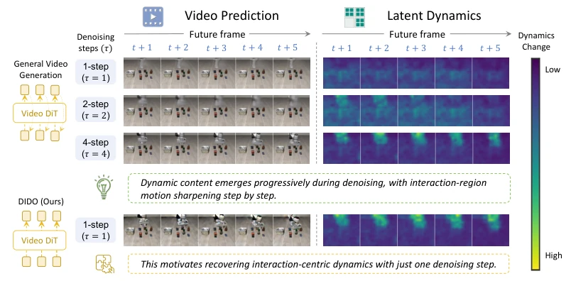
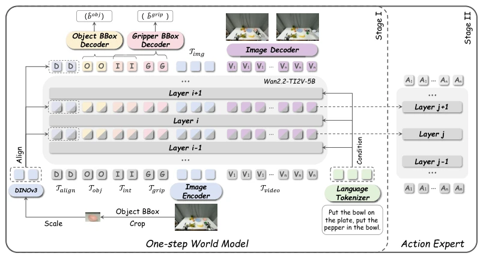
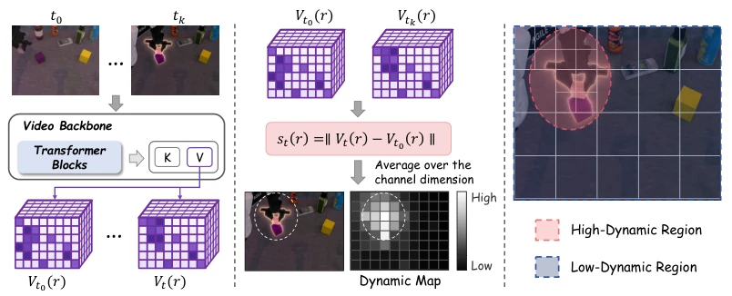
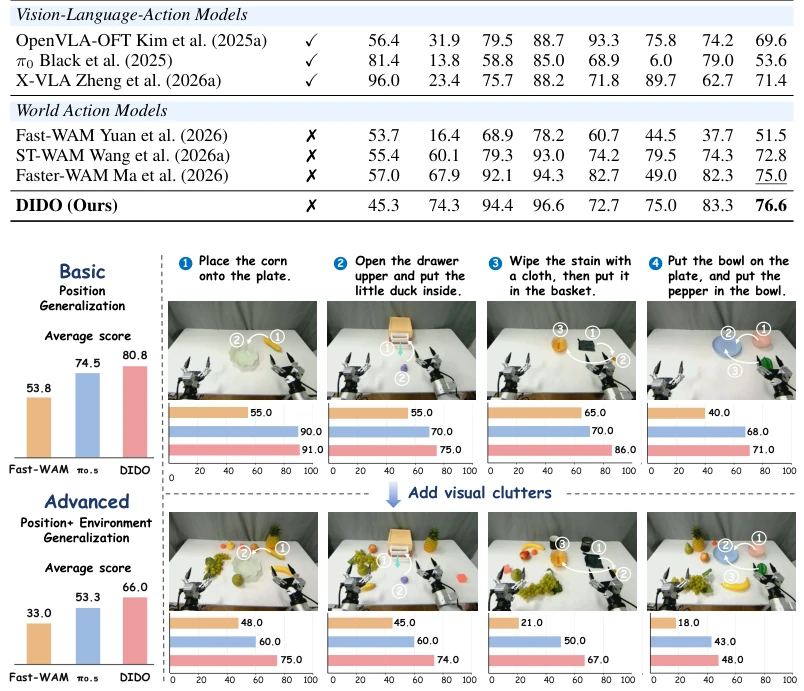
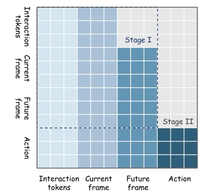
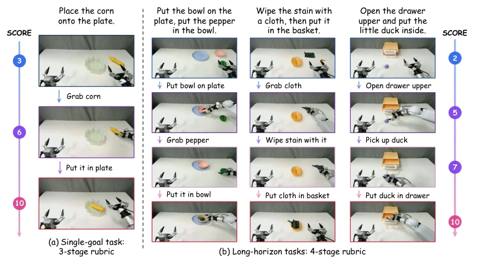
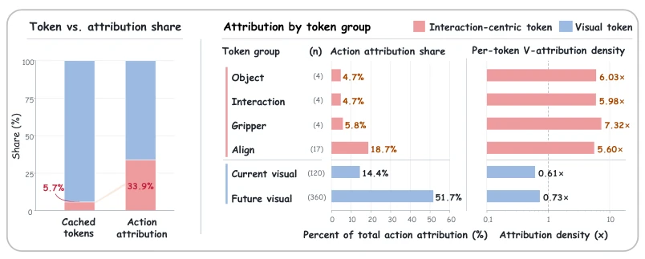

The DIDO paper attempts to perform a "weight loss surgery" on World Action Models, compressing multi-step denoising into a single step to solve latency issues in closed-loop control. The authors keenly discovered the "dynamic lag" phenomenon in the diffusion model denoising process: background structures emerge first, while interaction details emerge later. Thus, they developed a "combo" of distillation and interaction tokens. Although achieving 99.0% SOTA on LIBERO, on RoboTwin it is only 0.2% lower than LingBot-VA, feeling a bit like "holding back", after all two-arm contact tasks are harder. Moreover, this method of distilling multi-step models essentially uses extra supervision signals (such as DINOv3 alignment) to compensate for information loss in one-step generation, counting as a "space for time" compromise. However, completing prediction within 384ms is indeed excellent for real-time control. If this accuracy can be maintained in long-horizon tasks, that would be truly stable.
研究动机Motivation
现有的 World Action Models (WAMs) 依赖视频生成预测未来，但迭代去噪导致推理延迟高，难以满足闭环控制需求（Yuan et al., 2026）。虽然 Fast-WAM 等尝试截断去噪步骤（Chi et al., 2025），但作者发现简单截断会丢失关键的交互动态。因为扩散模型具有由粗到细的特性，静态背景在早期形成，而夹爪与物体的交互动态在后续步骤才逐渐清晰（Figure 1）。Flash-WAM (Akbari et al., 2026) 等单步蒸馏方法未显式建模交互，导致在复杂操作任务中表现下降。因此，如何在单步内恢复交互-centric 的动态，是提升 WAM 效率与性能的关键。
Existing World Action Models (WAMs) rely on video generation to predict the future, but iterative denoising leads to high inference latency, making it difficult to meet closed-loop control requirements (Yuan et al., 2026). Although Fast-WAM etc. attempt to truncate denoising steps (Chi et al., 2025), the authors found that simple truncation loses key interaction dynamics. Because diffusion models have a coarse-to-fine characteristic, static backgrounds form early, while gripper-object interaction dynamics become clear gradually in subsequent steps (Figure 1). Single-step distillation methods like Flash-WAM (Akbari et al., 2026) do not explicitly model interaction, leading to performance degradation in complex manipulation tasks. Therefore, how to recover interaction-centric dynamics within a single step is key to improving WAM efficiency and performance.

Figure 1: Interaction-centric dynamics emerge progressively during denoising and can be recovered in a single step. We compare a four-step teacher fine-tuned on robot data (top; rows show predic- tions after 1, 2, and 4 denoising steps) with DIDO (bottom). The four-step robot-domain teacher shows that scene structure forms early, while gripper-object dynamics sharpen across denoising steps. DIDO recovers these dynamics in a single step.
DIDO adopts a two-stage training framework. Stage I performs single-step dynamics distillation, using Distribution Matching Distillation (DMD) to migrate the 4-step teacher model convergence distribution to a single-step student, and introduces interaction-centric visual reasoning. Specifically including four types of tokens: object, gripper, interaction, and visual alignment tokens. Through bounding box trajectory supervision of spatial evolution, utilizing DINOv3 features to align visual information in multi-layer Transformers, ensuring key entities are not blurred. Stage II couples the single-step world model with an Action Expert through a mixed Transformer architecture, where the expert directly accesses intermediate representations for action prediction. Additionally, proposes a dynamic-based Token refinement strategy, retaining high-resolution tokens for high-dynamic regions, and performing average pooling compression for static regions to reduce redundant computation.

Figure 2: Overview of DIDO. In Stage I, the one-step world model augments the video trans- former with four interaction-centric token groups, including object Tobj, interaction Tint, gripper Tgrip, and alignment Talign tokens. The object and gripper branches predict future bounding-box trajectories ˆbobj and ˆbgrip using the shared interaction tokens, while the alignment tokens are su- pervised by DINOv3 features extracted from the target object crop. Together with the image- conditioning and video representations Tvideo, these tokens evolve through the video transformer to capture interaction-centric future dynamics. In Stage II, an action expert is coupled to the world model through a mixture-of-transformers architecture and directly accesses its intermediate repre- sentations for action

Figure 3: Dynamics-based token refinement. Given the current timestamp t0 and a future times- tamp tk, we obtain their corresponding value features Vt0 and Vtk from the video backbone and compute cell-wise differences to construct a dynamic map. The spatial feature map is partitioned into a 4×5 grid, with each region containing 2×2 fine-grained cells. We rank the 20 regions by the summed dynamics of their four cells, retain the top-3 high-dynamic regions at full token resolution, and apply 2 × 2 average pooling to the remaining regions. This preserves fine-grained interaction- relevant dynamics while substantially reducing redundant future-video tokens.
Evaluated on LIBERO, RoboTwin, and LIBERO-Plus benchmarks. DIDO achieves 99.0% success rate on LIBERO, surpassing Fast-WAM and Flash-WAM. 92.0% on RoboTwin, close to LingBot-VA. In LIBERO-Plus robustness tests, DIDO performs best under lighting and layout perturbations (76.6%). In real-world Galbot G1 tasks, DIDO averages a score of 66.0 in visually cluttered scenes, better than Fast-WAM's 33.0. Ablation studies show interaction tokens contributed 33.9% of action attribution, dynamic Token refinement reduced 30ms latency. Proving that single-step distillation combined with interaction supervision effectively balances efficiency and performance.

Figure 4: Real-world generalization on Galbot G1. The basic protocol evaluates unseen target positions, while the advanced protocol additionally introduces visual clutter. Bars show normalized task scores for Fast-WAM, π0.5, and DIDO, with the average across four tasks.

Figure 6: Shared attention between the world model and action expert.
其他图片Other Figures

Figure 7: Staged scoring for real-world tasks.

Figure 8: Token contributions to action generation. Left: Interaction-centric tokens occupy only 5.74% of the cache token for action generation but account for 33.9% of total action attribution. Right: Attribution is further decomposed across token groups. After normalization by token fre- quency, all interaction-centric groups exhibit substantially higher per-token attribution than the 1× baseline, whereas current and future visual tokens remain below it.